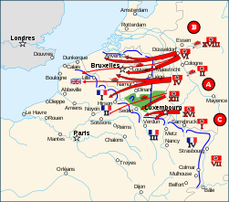
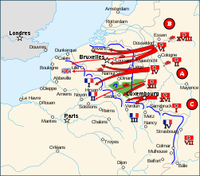
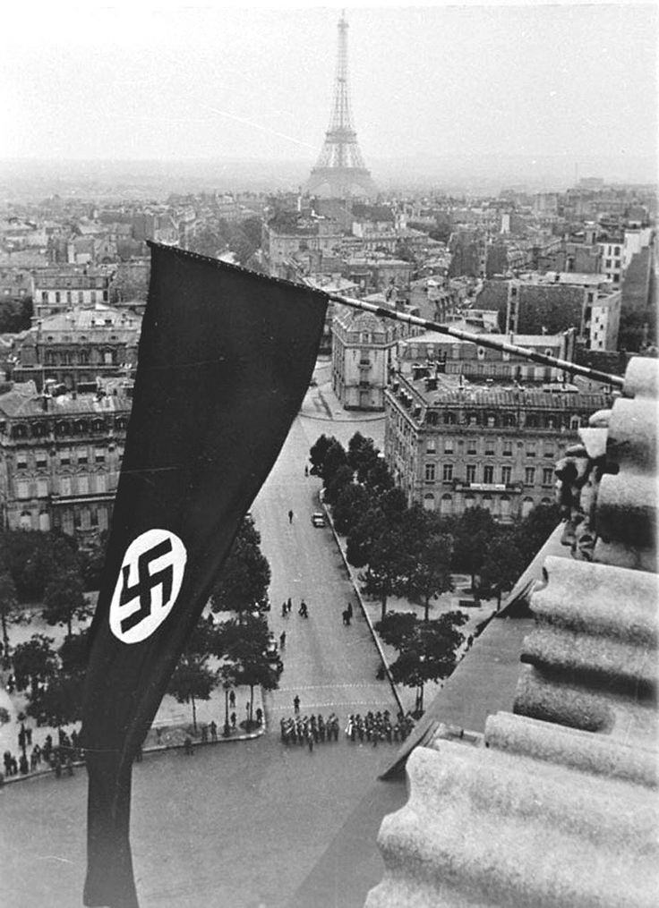

After the battle of Poland there was the so called “phoney war” as nothing was really going on besides a few minor air raids and skirmishes. This “war” lasted from the 27th of September until the 10th of May 1940. The French defensive line known as the “Maginot line” was located on the French-German border and was heavily fortified. The German war plan known as “Case Yellow” was similar to “the Schlieffen plan” used in World War One. They would again go through the middle of Belgium and bypass the main French defenses with a surprise attack though the Ardennes forest, while also invading the Netherlands.

The miracle of Dunkirk: The “British Expeditionary Force” (BEF) who were sent to France during the Invasion of Poland were now in full retreat along with French and Belgian forces. Commander of BEF Viscount Gort saw that an evacuation was the best option as they were surrounded and without reinforcements. The port town of Dunkirk was chosen as the evacuation spot.

The evacuation lasted until June 4th. In total 338,226 British, French and Belgian troops had been evacuated from Dunkirk. However, the Allies had left almost all of their tanks, vehicles and other equipment. This wasn’t a victory for the allies, but it wasn’t a complete defeat either.
Occupation of Paris: The Germans bombed Paris and its suburbs on the 3rd of June mainly targeting industries including the Citroën Car factory. On the 8th of June artillery fire could be heard in the distance, trains filled with refugees left the city and the government fled the city on the 10th. Many of Paris citizens followed the example and fled towards the other provinces of the countryside. Britain urged the French to defend Paris street by street, the deputy Prime Minister Philippe Pétain disagreed and said “To make Paris in to a city of ruin will not affect the issue”.
On the 12th the French government declared Paris an open city, there would be no resistance. Early in the morning on the 14th German soldiers and armored vehicles entered the city with loudspeakers telling the residents to stay inside their homes. The Germans occupied the city with no resistance and held a large parade in the evening.
On the 22th of June the French officially capitulated. During World War One the Germans signed the surrender in a railway cart, in order to further humiliate the French, they had to sign their surrender in the same cart. Hitler paid a visit to the French capital on the 24th of June on a short tour of the city.

German advance on France. Source
The Germans meet heavy resistance in Belgium however the defending troops were not prepared to handle the German tanks and Bombers. 4 days in to the invasion the Germans had crossed the Meuse river and on the 20th of May German tanks had reached the French town of Amiens, threatening to encircle the French and British forces stationed in the northern parts of Belgium and France. The Allied troops were now in full retreat and were headed for the port town of Dunkirk where they hoped to be evacuated.The miracle of Dunkirk: The “British Expeditionary Force” (BEF) who were sent to France during the Invasion of Poland were now in full retreat along with French and Belgian forces. Commander of BEF Viscount Gort saw that an evacuation was the best option as they were surrounded and without reinforcements. The port town of Dunkirk was chosen as the evacuation spot.
Soldiers on the beaches of Dunkirk. Source
On the 26th of May hundreds of boats, both military and civilian began to evacuate soldiers from the beaches and Harbor of Dunkirk. Hitler ordered his troops to halt their march on the 24th. It’s believed that Herman Göring convinced Hitler that the Luftwaffe could take care of the troops on the beaches. Hitler might also have believed that Britain would be more willing to surrender if their army wasn’t humiliated with surrender. However, when realizing they wouldn’t surrender he ordered his troops to advance on the 27th but was repelled by the defenders who’ve had time to dig in and fortify.The evacuation lasted until June 4th. In total 338,226 British, French and Belgian troops had been evacuated from Dunkirk. However, the Allies had left almost all of their tanks, vehicles and other equipment. This wasn’t a victory for the allies, but it wasn’t a complete defeat either.
Occupation of Paris: The Germans bombed Paris and its suburbs on the 3rd of June mainly targeting industries including the Citroën Car factory. On the 8th of June artillery fire could be heard in the distance, trains filled with refugees left the city and the government fled the city on the 10th. Many of Paris citizens followed the example and fled towards the other provinces of the countryside. Britain urged the French to defend Paris street by street, the deputy Prime Minister Philippe Pétain disagreed and said “To make Paris in to a city of ruin will not affect the issue”.
On the 12th the French government declared Paris an open city, there would be no resistance. Early in the morning on the 14th German soldiers and armored vehicles entered the city with loudspeakers telling the residents to stay inside their homes. The Germans occupied the city with no resistance and held a large parade in the evening.
On the 22th of June the French officially capitulated. During World War One the Germans signed the surrender in a railway cart, in order to further humiliate the French, they had to sign their surrender in the same cart. Hitler paid a visit to the French capital on the 24th of June on a short tour of the city.
